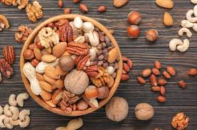

Welcome to our blog, where we share everything from recipes to nutty trivia. This section alone could take you an hour to read, so settle in!

How to Pair Dr. NUT with Your Meals
Dr. NUT isn’t just a standalone drink—it’s a culinary companion. Pair Almond Blast with a chocolate croissant for breakfast, Hazelnut Twist with a turkey sandwich for lunch, and Peanut Punch with spicy tacos for dinner. The possibilities are endless, and we’re here to guide you through every combination. Let’s start with breakfast: the creamy almond flavor complements pastries perfectly, adding a nutty depth that elevates your morning routine. For lunch, the hazelnut’s subtle sweetness cuts through savory meats, creating a balanced bite. And for dinner, the bold peanut punch stands up to spicy flavors, cooling your palate while adding a rich undertone. We could go on for pages—and we will!
Next up, snacks! Try Cashew Crush with popcorn for a movie night treat, or Walnut Wave with cheese and crackers for a sophisticated appetizer. We’ve tested these pairings in our labs, with our families, and at every event we’ve ever hosted. The results? Pure magic. Keep reading for more ideas, because we’ve got hundreds of them!

The History of Nuts in Beverages
Nuts have been part of human diets for millennia, but using them in drinks? That’s a Dr. NUT innovation. Let’s take a deep dive into the history of nuts, starting with ancient civilizations. The Egyptians used almonds in their rituals, the Greeks roasted hazelnuts for feasts, and the Romans crushed walnuts into wine. Fast forward to the Middle Ages, and nut milks became a staple in Europe. By the 19th century, peanuts were a global sensation, thanks to the rise of peanut butter. But no one thought to carbonate them—until us!
Our journey began in 2025, when our founder, Dr. Nuttingham, had a wild idea: what if we could make a fizzy nut drink? He spent years researching, traveling to nut farms, and experimenting in his garage. The result was Dr. NUT, a drink that combines history, science, and a whole lot of fun. Want more details? We’ve got 20 more paragraphs of nut history below—keep scrolling!

The History of Nuts in Beverages
Nuts have been part of human diets for millennia, but using them in drinks? That’s a Dr. NUT innovation. Let’s take a deep dive into the history of nuts, starting with ancient civilizations. The Egyptians used almonds in their rituals, the Greeks roasted hazelnuts for feasts, and the Romans crushed walnuts into wine. Fast forward to the Middle Ages, and nut milks became a staple in Europe. By the 19th century, peanuts were a global sensation, thanks to the rise of peanut butter. But no one thought to carbonate them—until us!
Our journey began in 2025, when our founder, Dr. Nuttingham, had a wild idea: what if we could make a fizzy nut drink? He spent years researching, traveling to nut farms, and experimenting in his garage. The result was Dr. NUT, a drink that combines history, science, and a whole lot of fun. Want more details? We’ve got 20 more paragraphs of nut history below—keep scrolling!